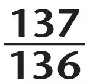
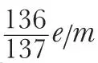
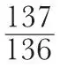
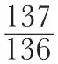
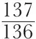
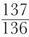

中文
中文
in Quantum TheoryA. S. Eddington
Editor’s Note
Arthur Eddington developed speculative theories to account for the values of the fine structure constant (which determines the strength of electrical forces) and the mass ratio of the proton to electron. In his theory these values were exactly 1/137 and 1847.6, in good agreement with experiments. But the measured ratio of electron charge to mass was slightly smaller than predicted, by a factor of more or less precisely 136/137. Here Eddington tries to explain how this extra factor might arise from the indistinguishability of electrons, which could cause overestimation of the electron mass by a factor of 137/136. Eddington’s speculations did not stand the test of time, but reflected a preoccupation with finding simplicities among the known fundamental constants. 中文
IT has been suggested by W. N. Bond1 that, in some or all of the attempts to determine e/m experimentally, the quantity actually found is

; for if the experimental results are corrected in accordance with this hypothesis, they are found to be in satisfactory accordance with my theoretical values of the fine-structure constant (137) and mass-ratio (1847.6). R. T. Birge2 has confirmed this; and, quoting three important recent determinations of e/m, he has shown that the agreement is extremely close. 中文
On theoretical grounds it seems likely that Bond’s hypothesis is right. In my earliest paper on the subject3, I gave the value of the fine-structure constant as 136, since I found the Coulomb energy of two elementary particles to be 1/136r in natural quantum units. This energy was

times too large, because I had not allowed for the 137th degree of freedom arising from the indistinguishability of the particles. Bond’s hypothesis implies that I am not the only victim of this mistake; current quantum theory in deriving from observational data the proper-energy or mass m of an electron has also obtained an energy
times too large. If so, the cause is presumably the same, namely, neglect to take into account the degree of freedom due to indistinguishability. 中文
There is nothing mystical in the effect of indistinguishability. It occasions, not an objective difference of behaviour, but a difference in what we can ascertain about the behaviour, and hence a difference of treatment. In the dynamics of two particles, we have to describe the change with time of the positions, momenta and spin-components (or of a probability distribution of them) of the particles which we call No.1 and No.2; and also we have to describe a growing uncertainty whether the particle, called No.1 at the time t, is the original No.1. If the probability that it is the original No.1 is cos2θ (so that the probability that it is the original No. 2 is sin2θ) the permutation variable θ will be a function of the time and have all the properties of a dynamical variable, giving therefore an extra degree of freedom of the system and having a momentum (energy of interchange) associated with it. When, however, the particles are distinguished without uncertainty, θ is constrained to be zero, and this degree of freedom is lost. 中文
Thus for the treatment of two indistinguishable particles, we have to start with an a priori probability distributed over a closed domain of 137 dimensions, whereas for two distinguishable particles it is distributed over a closed domain of 136 dimensions. Naturally, the average values of characteristics of the distribution are slightly different in the two treatments. In particular, the energy tensor of the a priori probability distribution, which is identical with the metrical tensor gμν of macroscopic theory, is different. Hence the two kinds of treatment are associated with different metrics of space-time. It seems clear that a factor

(neglected in current quantum theory) will be introduced by the change of metric when we equate the space occupied by the indistinguishable particles of quantum theory to the space occupied by the distinguishable parts of our measuring apparatus. 中文
It may be asked: Why does this factor affect the mass of the electron but not that of the proton? The discrimination is, I think, not strictly between the proton and electron, but between the resultant mass (M + m) which is nearly the mass of a proton, and the reduced mass of the relative motion Mm/(M + m) which is nearly the mass of an electron; for it is in the relative motion that the question of distinguishing the two ends of the relation arises. It may also be asked why the factor

, which refers especially to a system of two particles, applies irrespective of the number of particles. The answer is that the metrical ideas of quantum theory are borrowed from those of relativity theory; and since the latter are based on the interval between two points, the former refer correspondingly to the wave function of two particles. 中文
(133, 907; 1934)
A. S. Eddington: Observatory, Cambridge, June 5.
References:
1. W. N. Bond, Nature, 133, 327, March 3, 1934.
2. R.T. Birge, Nature, 133, 648, April 28, 1934.
3. A. S. Eddington, Proc. Roy. Soc., A, 122, 358; 1929.